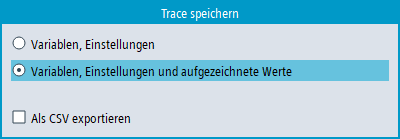
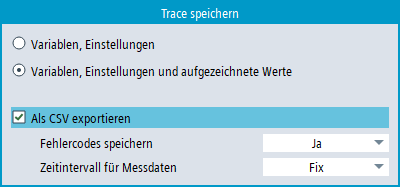

Sie haben zwei Möglichkeiten eine Trace-Sitzung zu speichern:
Variablen und Einstellungen: Es werden nur die Variablen und die Einstellungen dazu gespeichert.
Variablen, Einstellungen und aufgezeichnete Werte: Es werden die Variablen, die Einstellungen sowie die aufgezeichneten Werte gespeichert.
Mit der Trace-Sitzung wurden Messwerte ermittelt.
Sie haben eine aktive Trace-Sitzung bearbeitet und Messwerte aufgezeichnet.
Drücken Sie den Softkey "Trace speichern".
Der Dialog "Trace speichern" wird geöffnet und bietet die Speichermöglichkeiten an.
Wählen Sie die entsprechende Einstellung und drücken Sie den Softkey "OK".
Der Dialog für die Speicherverwaltung öffnet sich und gibt im Eingabefeld von "Trace-Dateinamen" den Dateinamen an. Das Dateiformat wird als *.xml automatisch vorgegeben und kann nicht verändert werden.
Das Zielverzeichnis ist z. B. "Trace":
Standardpfad: .../user/sinumerik/hmi/data/trace/
Ändern Sie den Dateinamen, wenn Sie den vorhandenen Namen nicht nutzen oder überschreiben möchten.
-oder-
Drücken Sie den Softkey "Verzeich. wechseln", wenn Sie die Sitzungsdatei in einem anderen Verzeichnis als im Standard-Verzeichnis "Trace" speichern möchten.
Der Datenbaum öffnet sich und Sie können zwischen den konfigurierten Laufwerken auswählen.
-oder-
Drücken Sie den Softkey "Neues Verzeichnis", wenn Sie ein neues Verzeichnis anlegen.
Das Fenster "Neues Verzeichnis" öffnet sich und Sie können einen Verzeichnisnamen vergeben.
-oder-
Drücken Sie den Softkey "Suchen" um den Dialog "Datei suchen" zu nutzen.
Bestätigen Sie Ihre Eingaben mit "OK", um die Sitzungsdatei zu speichern.
Wenn der Dateiname geändert wurde und bereits eine Sitzungsdatei mit diesem Namen vorhanden ist, erhalten Sie eine entsprechende Sicherheitsabfrage.
| Hinweis |
|
Für die Nutzung dieser Funktion ist eine Expert-Trace-Lizenz erforderlich, siehe "Expert-Trace-Funktionen". |
Um die Messdaten in eine CSV-Datei zu exportieren, aktivieren Sie im Dialog "Trace speichern" das Kontrollkästchen "Als CSV exportieren".
Sie können wählen, ob Sie die CSV-Datei mit oder ohne Fehlercodes speichern möchten. Fehlercodes können nur dann in den Daten vorhanden sein, wenn während der Aufzeichnung eine Unterbrechung aufgetreten ist.
Sie können wählen, ob Sie die Daten mit festem oder optimiertem Zeitintervall speichern möchten.
Wenn die Trace-Konfiguration Signale enthält, die bei einem IPO-Ereignis gemessen wurden, ist das Zeitintervall das kürzeste Abtastintervall.
Wenn die Trace-Konfiguration nur PLC-Signale enthält, die bei dem OB1-Ereignis (PLC-Zyklus) gemessen wurden, beträgt das Zeitintervall 0,1 ms. Aufgrund der kurzen Intervalldauer kann die Größe der erzeugten Datei groß sein.
Wenn für ein Signal nicht zu jedem Datenpunkt ein Messwert vorliegt (z. B. weil einige Signale mit längeren Abtastintervallen gemessen werden als andere), werden die fehlenden Werte mit dem letzten bekannten Wert des Signals aufgefüllt.
Auch fehlende Werte bei Unterbrechungen werden mit den letzten bekannten Werten aufgefüllt. Wenn auch Fehlercodes exportiert werden, weist das Vorhandensein des Fehlercodes auf die Unterbrechung hin.
Nur diejenigen Messpunkte werden in der CSV-Datei gespeichert, bei denen sich ein Datenwert ändert. Ausnahmen:
Die erste und die letzte Messstelle werden immer gespeichert.
Der Anfang und das Ende von Unterbrechungen werden immer gespeichert, wenn eine Unterbrechung existiert und die Datei mit Fehlercodes gespeichert wird.
Die Dateigröße wird dadurch kleiner, aber die Zeitintervalle sind unregelmäßig.
Wenn die Trace-Sitzung Signale ohne Messdaten oder mathematische (berechnete) Signale enthält, werden diese Signale nicht in die CSV-Datei exportiert.